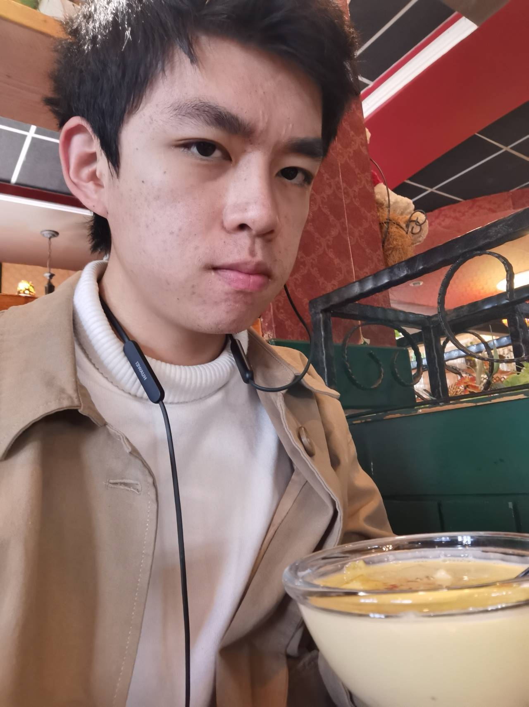

Chaofan Lin (in Chinese: 林超凡)

I'm an undergraduate at
ACM Honors Class,
Shanghai Jiao Tong University,
advised by
Prof. Yong Yu.
And I'm a research intern at
Catalyst, Carnegie Mellon University
and is now focusing on the design of relax (a
high-level IR for
Apache TVM)
training workflow.
My research interest lies on ML Systems, Compiler, virtual machine and Programming Language.
I am also deeply interested in some elegant and beautiful mathematical theories,
such as Set theory, Category theory, etc.
I am passionate about "building": build a delicate system or build self-consistent theory.
Every work of mine is an artwork of an artist for me. I believe there is no silver bullet
and compromisation is necessary in design.
Education
Bachelor in Computer Science, Shanghai Jiao Tong University.
Aug. 2020 – Present.
A member of ACM Honor Class, Zhiyuan College.
Projects
apache/tvm
Reseach
Working on the TVM Unity (Especially the development of Relax IR). More experimental work can be
found
in this fork:
mlc-ai/relax.
Masterball
Course Project of Compiler Design
A Compiler from Mx* language (which is a C++ & Java like
language designed for this course) to RV32I Assembly, with many optimizations on LLVM IR.
Its performance is close to GCC O2 on testcases.
And as an exploration of CS2965, Advanced Compiler Project, I implemented a interpreter of LLVM IR
with simple Just-In-Time (JIT) technique supported.
This assignment received a perfect score in
two different compilation courses.
NightWizard
Course Project of Computer Architecture
A RISC-V CPU implemented in Verilog HDL. It uses Tomasulo algorithm for dynamic scheduling and
supports
at most 120MHz clock rate to pass all testcases. It runs on Basys3 FPGA Board (XC7A35T-ICPG236C).
I modified the traditional framework of this course project so that it can
operator two RAMs, which makes it possible to separate RAM into IRAM and DRAM.
fscape
Course Project of Operating System
A game based on a simple self-implemented FUSE filesystem. Use ’cd’ to move, find a specified file
in the file
system to escape from this file system maze.
Distributed Hash Table
Course Project of Principle and Practice of Computer Algorithms
DHT (chord & kademlia protocol) implementation in Golang.
Python
Interpreter
Course Project of Programming Design (A)
A simple Python3 Interpreter using antlr4 framework.
Notes
Entertainment
Moment
A chatting bot which can be deployed to QQ. You can also chat with it in Linux shell.
Frozen!A simple survival game implemented in QT.